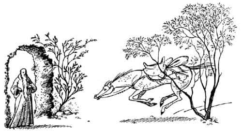
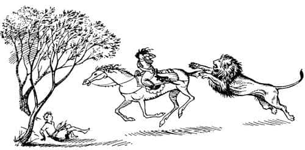

Güneydeki Sınırların Münzevisi
Aşağıya doğru saatlerce yol aldıktan sonra vadi genişledi ve önlerinde ne olduğunu görmeye başladılar. İzlemekte oldukları nehir, burada soldan sağa, doğuya doğru akan geniş ve çalkantılı başka bir nehre kavuştu. Bu nehrin ötesinde, küçük tepelerden oluşan şirin kırlıklar, birbiri ardına dizilmiş sırtlarla kuzey dağlarına doğru yükseliyordu.
Sağ taraftaki kayalık tepelerden bir ikisinin sivriliklerine yapışmış karlar vardı.
Solda çamlık yamaçlar, sarp görünüşlü uçurumlar, dar vadiler ve mavi tepeler göz alabildiğine uzanmaktaydı. Shasta, artık Pire Dağı’nı göremiyordu. Tam karşıda sıradağlar arasında yer alan, eyer biçimindeki ormanlık yer, Archenland’ı Narnia’ya bağlayan geçit olmalıydı.
“Broo-hoo-hoo, kuzey, yeşil kuzey!” diye kişnedi Bree. Alçak tepeler, Shasta ve Aravis’in güneye alışmış gözlerine, düşündüklerinden daha yeşil ve canlı göründü. İki nehrin sularının gürültüyle karıştığı yere inerken moralleri yükselmişti.
Sıradağların batı ucundaki yüksek dağlardan kaynayan ve doğuya akan nehir, yüzmeyi akıllarına getiremeyecekleri kadar hırçındı. Nehrin kıyısında durup biraz düşündükten sonra, aşağıya ve yukarıya doğru biraz yürüdüler. Sonunda, yürüyerek geçebilecekleri sığ bir yer buldular.
Suyun gümbürtüsü, şakırtısı ve atların ayaklarında yaptığı girdaplar, serin ve canlı hava, ok gibi uçan yusufçuk kuşları Shasta’yı tuhaf bir heyecana boğmuştu.
Yolunu, suyu döverek şakırtılarla açan Bree, nehrin kuzey kıyısında “Dostlar, artık Archenland’dayız!” dedi “Sanırım bu geçtiğimiz nehire, Yılankavi Ok deniyor.”
“Umarım zamanında gelmişizdir” diye mırıldandı Hwin.
Sonra ağır ağır, zikzaklar çizerek yukarıya doğru ilerlemeye başladılar. Yokuş çok dikti. Ne bir yol, ne de evler vardı. Adeta bir park alanı gibiydi burası. Her yana serpiştirilmiş ağaçlar vardı, ancak bir orman oluşturacak yoğunlukta değildi.
Bütün hayatı boyunca neredeyse ağaçsız, otluk bölgelerde yaşamış olan Shasta, hiç bu kadar çok ve bu çeşitlilikte ağaç görmemişti. Orada olsaydınız, onun meşe, kayın, huş, üvez ve tatlı kestane ağaçlarını gördüğünü bilirdiniz (o bilmiyordu).
Onlar ilerledikçe, tavşanlar sağa sola, telaşla kaçıyorlardı. Biraz sonra ağaçlar arasında koşuşan sarı renkli bir geyik sürüsü gördüler. “Muhteşem değil mi?” dedi Aravis.
İlk sırta geldiklerinde Shasta eyerinin üzerinde dönerek arkasına baktı. Tashbaan’dan hiçbir iz yoktu; kat ettikleri dar, yeşil vadi dışında çöl dümdüz, ufka kadar uzanıyordu.
“Hey!” dedi Shasta aniden. “Bu da ne?”
“Ne, ne?” dedi Bree dönerek. Aravis ve Hwin de dönmüşlerdi.
“Şu” dedi Shasta işaret ederek. “Dumana benziyor. Yangın mı var?”
“Bence kum fırtınası” dedi Bree.
“Buna neden olacak kadar rüzgâr yok” dedi Aravis.
“Oh!” diye bağırdı Hwin. “Bakın! İçinde parlayan bir şeyler var. Bakın! Miğferler ve zırhlar. Geliyorlar – bu yana geliyorlar.”
“Tash adına!” dedi Aravis. “Ordu bu! Rabadash’ın ordusu.”
“Elbette Rabadash” dedi Hwin. “Korktuğum başıma geldi. Çabuk! Anvard’a ondan önce varmalıyız.” Ve başka bir söz etmeksizin aceleyle dönüp, kuzeye doğru dörtnala koşmaya başladı. Bree de başını geriye doğru silkeleyip onu izledi.
“Hadi Bree, hadi” diye bağırdı Aravis omzunun üzerinden.
Atlar için çok yorucu bir koşuydu bu. Ulaştıkları her sırtın üzerinde, önlerinde bir vadi, onun ötesinde de bir başka sırt daha buluyorlardı. Genel olarak doğru yönde gittiklerini bilmelerine karşın, kimse Anvard’ın ne kadar uzakta olduğunu tahmin edemiyordu. Shasta, ikinci sırtın üzerinden yeniden geriye baktı. Çölün gerisindeki toz bulutu yerine, şimdi Yılankavi Ok’un öte yakasında karıncalar gibi kaynaşan kapkara bir kütle gördü. Nehri geçecek bir yer aradıklarına kuşku yoktu.
“Nehre gelmişler!” diye bağırdı çılgınca.
“Çabuk! Çabuk!” diye bağırdı Aravis. “Anvard’a zamanında yetişemeyeceksek, hiç gelmesek daha iyi olurdu. Dörtnala Bree, dörtnala! Savaş atı olduğunu unutma.”
Shasta da benzer talimatlar vermemek için kendini zorluyordu; “Zavallı, şimdiden elinden geleni yapıyor” diye düşünüp dilini tutuyordu. Ve iki at, ellerinden geleni olmasa bile, ellerinden geldiğini sandıkları her şeyi kesinlikle yapmaktaydılar, ki ikisi aynı şey değildir. Bree, Hwin’e yetişmişti. İkisi de otların arasında, yan yana yıldırım gibi koşuyorlardı. Hwin, bu yan yana koşuyu, muhtemelen daha fazla sürdüremeyecek gibi görünüyordu.
Arkalarından gelen bir sesle, o an hepsinin duyguları bütünüyle değişti. Bu, tahmin ettikleri ses – belki de Calormenlilerin savaş çığlıklarıyla karışık, atların ayak sesleri ve zırhların şakırtısı – değildi. Ancak Shasta sesi hemen tanıdı; Aravis ve Hwin’le karşılaştıkları, ayışığıyla aydınlanan o ilk gece duyduğu hırıltılı kükremeydi. Bree de tanımıştı bu sesi. Gözleri kıpkırmızı parıldadı ve kulakları geriye yattı. Shasta şimdi, onun elinden geldiği kadarki – olabildiğince – hızla değil, çılgınca koştuğunun farkına vardı. Shasta değişikliği hemen hissetti. Birkaç saniye içinde Hwin’in epeyce ilerisindeydiler.
“Bu olamaz” diye düşündü Shasta. “Burada aslanlardan korunacağımızı düşünüyordum!”
Omzunun üzerinden geriye baktı. Her şey apaçıktı. Arkalarında, bahçeye bir köpek girdiğinde, bahçenin öbür yanındaki ağaca doğru hızla, bir kedi gibi koşan, vücudu yere yakın, kocaman, sarımsı bir yaratık vardı ve her saniye biraz daha yaklaşıyordu.
Yeniden ileriye baktığında, anlam veremediği, hatta hiç aklına gelmeyen bir görüntüyle karşılaştı: Yol, yaklaşık üç metre yüksekliğinde düzgün, yeşil bir duvarla kapanmıştı. Duvarın ortasında açık bir kapı vardı. Ve kapının ağzında, çıplak ayaklarına kadar uzanan, sonbahar yaprakları renginde bir giysi giymiş, düzgün bir asaya dayanan, uzun boylu bir adam dikiliyordu. Sakalı neredeyse dizlerine değiyordu.
Tüm bunları bir bakışta gören Shasta, yeniden geriye baktı. Aslan, Hwin’i yakalamak üzereydi; arka ayaklarını ısırmaya çalışıyordu. Hwin’in iri gözlü, köpüklü yüzünde hiç umut yoktu şimdi.

“Dur!” diye kükredi Shasta, Bree’nin kulağına. “Geri dönelim. Yardım etmeliyiz!”
Bree sonraları, bunu duymadığını ya da anlamadığını söyleyecekti. Genellikle gerçeği söylediğini bildiğimiz için onun sözüne güvenmeliyiz.
Shasta, ayaklarını üzengilerden çıkardı, iki bacağını da atın sol tarafına alıp, bir an bile denemeyecek kadar durakladı ve atladı. Bu hareket canını fena halde yaktı ve neredeyse nefesi kesildi. Fakat o buna aldırmıyor, Aravis’e yardım etmek için koşuyordu. Şimdiye kadar böyle bir şey yapmamıştı, şimdi de neden yaptığını bilmiyordu.
Yeryüzündeki en korkunç seslerden biriyle birlikte, Hwin’in dudaklarından bir kişneme sesi yükseldi. Aravis, Hwin’in boynuna kapaklanmış, kılıcını çekmeye çalışıyor gibi görünüyordu. Şimdi üçü birden – Aravis, Hwin ve aslan – neredeyse Shasta’yı çiğnemek üzereydiler. Tahminlerin ötesinde bir irilikte olan; çok yakınına gelmeden ne kadar büyük olduğunu anlayamayacağınız aslan, arka ayakları üzerinde kalktı ve sağ pençesini Aravis’e salladı. Pençeleri gören Aravis bağırdı ve eyerde sallandı. Aslan, Aravis’in omzunu parçalıyordu. Shasta, korkudan yarı deli bir şekilde hayvana doğru sendeleyerek atıldı. Değil silahı, bir taş ya da sopası bile yoktu. Sanki bir köpeğe bağırırmış gibi aptalca aslana bağırıyordu: “Dön evine! Dön evine!” Bir an için aslanın, ardına kadar açılmış köpüklü ağzına baktı. Hâlâ arka ayakları üzerinde duran aslan o anda, Shasta’nın tüm şaşkınlığına karşın, hareketsiz kaldı, tepetaklak döndü, sonra kendini toparladı ve aceleyle kaçtı.

Shasta onun gittiğine bir türlü inanamamıştı. Geriye döndü ve biraz önce gördüğünü hatırladığı yeşil duvardaki kapıya doğru koştu. Neredeyse baygın düşecek olan Hwin, tökezleyerek kapıdan girmek üzereydi. Aravis hâlâ eyerin üzerindeydi ama sırtı kan içindeydi.
“Gel kızım, gel” diyordu giysili adam; sonra da, “gel oğlum” dedi, Shasta nefes nefese ona yaklaşırken. Shasta, arkasından kapıların kapandığını duydu. Sakallı yabancı, Aravis’e attan inmesi için yardım etmeye başlamıştı bile.
Göz alıcı yeşilliklerle kaplı yüksek bir duvarla korunan, geniş, yusyuvarlak kapalı bir alan içindeydiler. Önlerinde, kıpırtısız bir su havuzu vardı; öylesine doluydu ki suyun yüzeyi neredeyse yerle birdi. Havuzun yanı başında, dalları havuzu tamamen gölgede bırakan, Shasta’nın ömründe gördüğü en kocaman ve en güzel bir ağaç yükseliyordu. Havuzun biraz ötesinde çok eski, antik, çatısı samanla örtülü, alçak, küçük, taş bir ev vardı. İçeriden meleme sesleri geliyordu ve kapalı alanın öbür tarafında birkaç keçi görünüyordu. Düzgün zemin tamamıyla çimle kaplıydı.
“Sen – sen – sen” dedi nefes nefese Shasta. “Archenland kralı Lune musun?”
Yaşlı adam başını iki yana salladı; “Hayır” diye cevapladı sakin bir sesle. “Ben güneydeki sınırlarının münzevisiyim. Ve şimdi oğlum, sorularla vakit kaybetme, itaat et. Bu küçük hanım yaralı. Atlarınız perişan. Rabadash, şu anda Yılankavi Ok’u geçecek bir sığlık arıyor. Hiç dinlenmeden hemen yola çıkarsan hâlâ Kral Lune’u uyaracak zamanın var.”
Bu sözler Shasta’yı canından bezdirdi, çünkü hiç gücü kalmadığını düşünüyordu. Bu adaletsiz ve zalimane isteğe içten içe isyan ediyordu. Yaptığın bir iyilik için alacağın ödülün, hemen her zaman daha güç ve daha çok iyilik yapmak olduğunu henüz öğrenmemişti. Ama yüksek sesle söylediği tek şey, “Kral nerede?” oldu.
Münzevi döndü ve asasıyla işaret etti. “Bak” dedi. “Girdiğin kapının tam karşısında başka bir kapı daha var. Onu aç ve dosdoğru git. Düz ya da yokuş, düzgün ya da engebeli, çamur ya da kuru, daima dosdoğru ilerle. Kral Lune’u dosdoğru ilerde bulacağını sanatım sayesinde biliyorum. Ancak koş, koş, koş; hep koş.”
Shasta başını salladı, kuzey kapısına koştu ve kapının ardında kayboldu. Sonra Münzevi, bunca zamandır sol koluyla destek olduğu Aravis’i aldı, biraz yönlendirip, biraz da taşıyarak eve götürdü. Uzun bir süre sonra yeniden dışarı çıktı.
“Evlatlarım” dedi atlara, “şimdi sıra sizde.”
Cevap beklemeksizin – aslında atlar konuşamayacak kadar yorgundu – ikisinin de dizginlerini ve eyerlerini çıkardı. Sonra ikisini de öyle bir tımarladı ki, kralın ahırlarındaki bir uşak bundan daha iyisini yapamazdı.
“İşte evlatlar” dedi, “kafanız rahat olsun, keyfinize bakın. Su burada, ot orada. Diğer evlatlarımın; keçilerin sütünü sağdığımda sıcak lapa yersiniz.”
“Efendim” dedi Hwin, nihayet ses çıkarmayı başararak: “Tarkheena hayatta mı? Aslan onu öldürdü mü?”
“Sanatım sayesinde şu zamanda olan pek çok şeyi bilen ben” dedi Münzevi, “gelecekte olacaklar üstüne çok az bilgi sahibiyim. Bu nedenle, dünyadaki bir adamın ya da kadının yahut da hayvanın bu akşam gün battığında hayatta olup olmayacağını bilmiyorum. Küçük hanım, yaşıtlarından herhangi birinin yaşadığı kadar yaşayacak.”
Aravis kendine geldiğinde, taş duvarları sıvasız, çıplak bir odada, pamuk gibi yumuşak, alçak bir yatakta yüzüstü yatmakta olduğunu anladı. Neden yüzüstü yatırıldığını anlayamadı, fakat dönmeyi deneyip de bütün sırtındaki can yakıcı ağrıları hissettiğinde her şeyi hatırladı. Süpürgeotundan yapılan (en iyi yatak dolgusudur), harika bir biçimde yaylanabilen bu yatağın nasıl bir şeyden yapıldığını anlayamamıştı, çünkü süpürgeotu, yaşamında hiç görüp duymadığı bir şeydi.
Kapı açıldı ve Münzevi, elinde büyük bir ahşap tasla içeri girdi. Tası dikkatle yere koyduktan sonra yatağın yanına geldi ve “Kendini nasıl hissediyorsun kızım?” diye sordu.
“Sırtım çok acıyor peder” dedi Aravis, “başka bir şikâyetim yok.”
Münzevi onun yanına diz çöktü, elini alnına koydu, sonra kalp atışlarını dinledi.
“Ateşin yok” dedi. “İyi olacaksın. Aslında, yarın kalkmaman için bir neden yok. Ancak şimdi şunu iç.”
Ağaç tası alıp Aravis’in dudaklarına tuttu. Alışkın olmayan biri için keçi sütü biraz tuhaftır, bu nedenle Aravis tadına baktığında yüzünü buruşturmaktan kendini alamadı. Ne var ki çok susamıştı ve hepsini içmeyi başardı; bitirdiğinde kendini daha iyi hissediyordu.
“Kızım, şimdi istediğin zaman uyuyabilirsin” dedi Münzevi. “Çünkü yaraların yıkandı ve ilaçlandı. Acı çekmene karşın, kırbaç yarasından daha kötü değil. Tuhaf bir aslan olmalı o, çünkü seni yakalayıp eyerden aşağı çekerek dişlerini geçireceğine, sadece sırtına pençe atmış. On tane çizik var: Acı verir ama derin ve tehlikeli değil.”
“Doğru!” dedi Aravis. “Şansım varmış.”
“Kızım” dedi Münzevi, “bu dünyada, şimdiye kadar yüz dokuz kış geçirdim ve şans denilen şeyle henüz karşılaşmadım. Bütün bunlar hakkında anlamadığım bir şey var. Fakat bilmemiz gerekiyorsa emin ol ki öğreneceğiz.”
“Rabadash ve iki yüz atlısına ne oldu?” diye sordu Aravis.
“Artık bu yoldan geçmeyecekler sanırım” dedi Münzevi. “Bizim epeyce doğumuzda bir sığlık bulmuş olmalılar. Oradan dosdoğru Anvard’a gitmeyi deneyeceklerdir.”
“Zavallı Shasta!” dedi Aravis. “Yolu uzun mu? Oraya onlardan önce varabilir mi?”
“Öyle umuyoruz” dedi yaşlı adam.
Aravis yeniden uzandı (bu kez yan dönmüştü) ve “Uzun süre mi uyudum? Karanlık çöküyor gibi görünüyor” dedi.
Münzevi, kuzeye bakan tek pencereden dışarıyı seyrediyordu. “Bu gece karanlığı değil” dedi az sonra. “Fırtına Burnu’ndan bulutlar geliyor. Bu taraflarda kötü hava her zaman oradan gelir. Bu gece yoğun sis olacak.”
Ertesi gün, acıyan sırtı dışında, Aravis kendini çok iyi hissediyordu. Kahvaltıdan sonra (kaymak ve sütlü lapa) Münzevi, onun kalkabileceğini söyledi ve tabii ki, Aravis atlarla konuşmak üzere dışarı çıktı. Hava değişmişti ve yeşil alanın her tarafı sanki büyük yeşil bir kâse gibi, gün ışığına boğulmuştu. Burası çok sakin bir yerdi; sessiz ve ıssız.
Hwin hemen Aravis’e doğru koştu ve ona bir at öpücüğü verdi.
Birbirlerine sağlık durumlarını ve iyi uyuyup uyumadıklarını sordular. Sonra Aravis, “Peki Bree nerede?” dedi.
“Orada” dedi Hwin, burnuyla alanın öbür yakasını göstererek. “Şimdi gidip onunla konuşsan iyi olur. Bir şeyler yolunda gitmiyor. Ağzından bir sözcük bile alamıyorum.”
Yavaş yavaş karşı tarafa geçtiler ve Bree’yi yüzü duvara dönük yatarken buldular. Bree onların geldiğini duymasına karşın ne başını çevirdi, ne de tek bir söz etti.
“Günaydın Bree” dedi Aravis. “Bu sabah nasılsın?”
Bree kimsenin anlamadığı bir şeyler mırıldandı.
“Münzevi, Shasta’nın Kral Lune’a muhtemelen zamanında yetiştiğini söylüyor” diye devam etti Aravis, “bütün dertlerimiz sona ermiş gibi görünüyor. Ve sonunda Narnia, Bree!”
“Ben Narnia’yı asla görmeyeceğim” dedi Bree alçak bir sesle.
“İyi değil misin sevgili Bree?” dedi Aravis.
Sonunda Bree onlara döndü, yüzü bir atın yüzünün olabileceği kadar kederliydi.
“Ben Calormen’e geri döneceğim” dedi.
“Ne?” dedi Aravis. “Yeniden köle mi olmak istiyorsun?”
“Evet” dedi Bree. “Bana ancak kölelik yakışır. Narnia’daki özgür atların yüzüne nasıl bakarım? – Kendi kellemi kurtarmak için tüm gücümle dörtnala giderken, bir kısrağı, bir kızı ve bir oğlanı Aslanların ağzına terk eden ben!”
“Hepimiz tüm gücümüzle kaçtık” dedi Hwin.
“Shasta kaçmadı!” diye homurdandı Bree. “En azından, doğru yöne koştu o, geriye. Ve beni en çok utandıran şey de bu. Kendine savaş atı diyen ve yüzlerce kavga ile övünen ben, küçük bir insan çocuğuna, ne kılıç tutmuş, ne de iyi terbiye almış bir çocuğa, sadece bir taya yenildim.”
“Biliyorum” dedi Aravis. “Ben de aynı şeyleri hissettim. Shasta olağanüstüydü. Ben de en az senin kadar kötüyüm Bree. Karşılaştığımızdan beri ona tepeden bakıyor ve küçümsüyordum, ama şimdi, içimizde en iyisi o çıktı. Ancak burada kalıp üzgün olduğumuzu söylemek, Calormen’e dönmekten daha iyidir.”
“Bu senin için iyi olabilir” dedi Bree. “Sen kendini rezil etmedin. Fakat ben her şeyimi kaybettim.”
“Benim güzel atım” dedi Münzevi (çıplak ayakları o hoş, ıslak çimde çok az ses çıkardığı için fark edilmeden yaklaşmıştı). “Benim güzel atım, sen kendini beğenmişliğinden başka hiçbir şeyini kaybetmedin. Hayır, hayır evladım. Kulaklarını geriye çekip yeleni sallama bana. Gerçekten bir dakika önce göründüğün kadar alçakgönüllüysen, aklının sesini dinlemesini öğrenmelisin. Zavallı, dilsiz atlar arasında yaşarken düşünmeye başladığın gibi, tam anlamıyla muhteşem bir at değilsin. Elbette onlardan daha akıllı ve cesurdun. Öyle olmamak elinden gelmezdi. Buna dayanarak, Narnia’da çok özel biri olacağın anlamı çıkmaz. Fakat çok özel bir kişi olmadığını bildiğin sürece, her şey göz önüne alındığında, iyi bir at olacağını söyleyebilirim. Şimdi sen ve diğer dört ayaklı evladım; mutfağın kapısına gelirseniz, şu lapanın geri kalanı hakkında bir şeyler düşünürüz.”